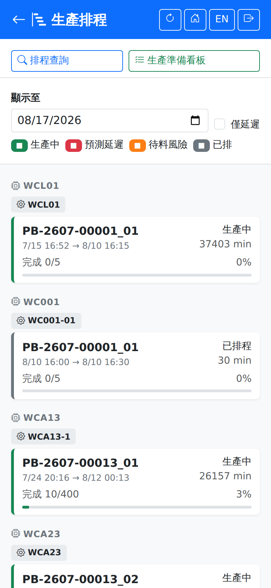
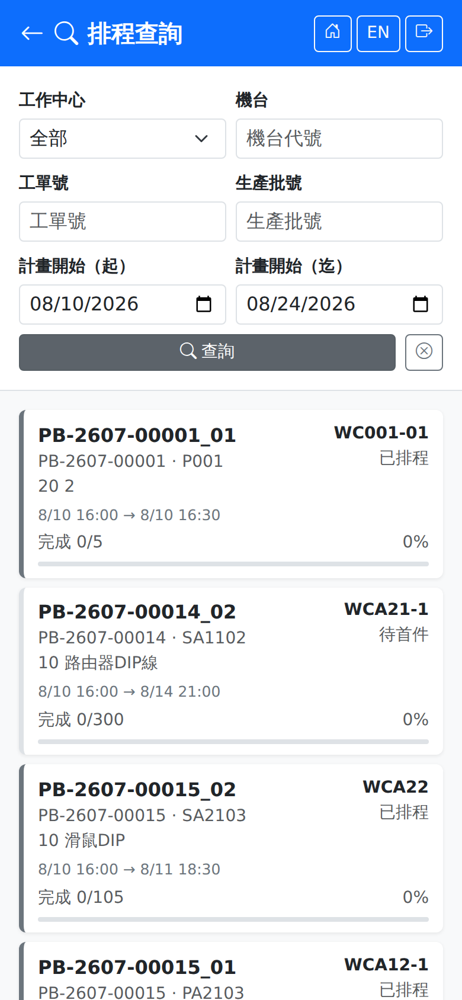

生產排程Production Schedule
依工作中心與機台分組列出已排程的派工，供現場確認接下來要做什麼。本頁唯讀，不會改變任何派工。Lists scheduled dispatches grouped by work center and machine, so the floor can see what is coming next. The page is read-only and changes no dispatch.

顯示範圍與圖例Range and legend
卡片左側色條與右上角徽章代表狀態：The coloured bar on the left of each card and the badge at the top right show the status:
| 圖例Legend | 說明Guide |
|---|---|
| 生產中In Progress | 已開工，正在生產。Work has started and is under way. |
| 預測延遲Predicted Late | 依目前進度推算會超過計畫完成時間，卡片另加「延遲」徽章。Projected to miss the planned finish time at the current rate; the card also carries a "Late" badge. |
| 待料風險Material Risk | 用料尚未備妥，開工前可能缺料，卡片另加「待料」徽章。Material is not ready and may be short before work starts; the card also carries a "Waiting" badge. |
| 已排Scheduled | 已排定但尚未開工。Scheduled but not started. |
卡片內顯示派工號、計畫起訖時間、時長（分鐘）與完成進度（已完成／派工量與百分比）。頁尾的「上次更新」是資料取得時間，點右上角的 可重新整理。Each card shows the dispatch number, the planned start and finish, the duration in minutes and the progress (done out of the dispatched quantity, with a percentage). "Last updated" at the foot is when the data was fetched; the button at the top right refreshes it.
排程查詢Schedule query
點上方的「排程查詢」進入條件查詢頁，用於找特定工單或機台的派工，而不是看整體排程。Tap "Schedule Query" at the top to open the query screen, which is for finding the dispatches of a particular work order or machine rather than viewing the whole schedule.

| 查詢條件Criterion | 說明Guide |
|---|---|
| 工作中心Work Center | 下拉選擇，預設「全部」。A dropdown; the default is "All". |
| 機台Machine | 輸入機台代號。Type the machine code. |
| 工單號Work Order | 輸入工單號。Type the work order number. |
| 生產批號Batch | 輸入生產批號。Type the production batch number. |
| 計畫開始（起）／（迄）Planned Start (From) / (To) | 以計畫開始時間限定區間。Limits the range by planned start time. |
生產準備看板Preparation board
另一顆按鈕「生產準備看板」用於開工前確認備料與模具狀況，說明見該頁。The other button, "Preparation Board", is for checking material and tooling readiness before work starts; see that page for details.